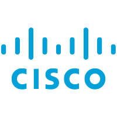
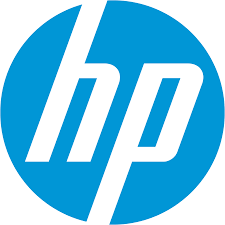

Accueil
Services Informatiques
Jobs
Entreprise
Contact
Accueil
Services Informatiques
Jobs
Entreprise
Contact
Nous sommes une soci?t? suisse de service informatique ?thique et ? vocation durable, bas?e ? Gen?ve.
Nous proposons des solutions de maintenance et de gestion pour vos applications et vos syst?mes d'information (logiciels, mat?riels, postes, serveurs, s?curit?, sauvegardes).
Nos prestations sont vari?es de la conception au d?ploiement de votre infrastructure informatique tout en assurant la maintenance et la sauvegarde de vos donn?es.
Du conseil en hardware ? l?impl?mentation d?un r?seau interne, Tekinfo dispose d?une ?quipe de professionnels exp?riment?s et certifi?s pour la gestion compl?te de votre infrastructure informatique.
Les certifications sont importantes dans le sens o? elles attestent notre savoir-faire et nos comp?tences.
Ces certifications sont obtenues apr?s une s?rie de tests qui valident que l?entreprise et/ou le technicien remplissent bien les conditions d?obtention.
Les partenariats, quant ? eux, offrent un catalogue de services plus ?tendu pour nos clients et un service apr?s-vente de qualit?.
Nous sommes partenaires et certifi?s par:
|  |  |
 |
|
|---|---|---|---|
 |
 |  |
Nos mandataires sont bas?s principalement dans le canton de Gen?ve et dans le canton de Vaud. Ils occupent diff?rent secteurs d'activit?s comme le commerce ou l'industrie. Nos comp?tences et notre flexibilit? permettent d'apporter une solution personnalis?e ? leurs projets. Nous avons r?alis? des mandats avec, par exemple:
Notre agence est ouverte de 8h00 ? 18h00, non stop.
Rue de la donn?e 65
1208 Gen?ve
Tel: 022 123 45 67
Email: info@tekinfo.ch
Tekinfo SA est une soci?t? de service informatique qui vous accompagne dans vos projets de la conception ? la r?alisation tout en assurant la maintenance de vos syst?mes d?information.